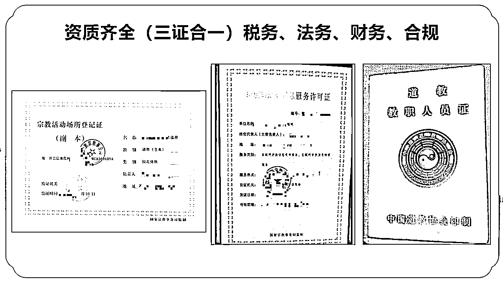
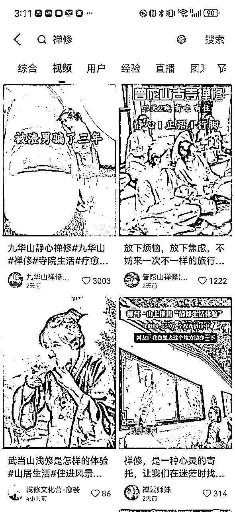
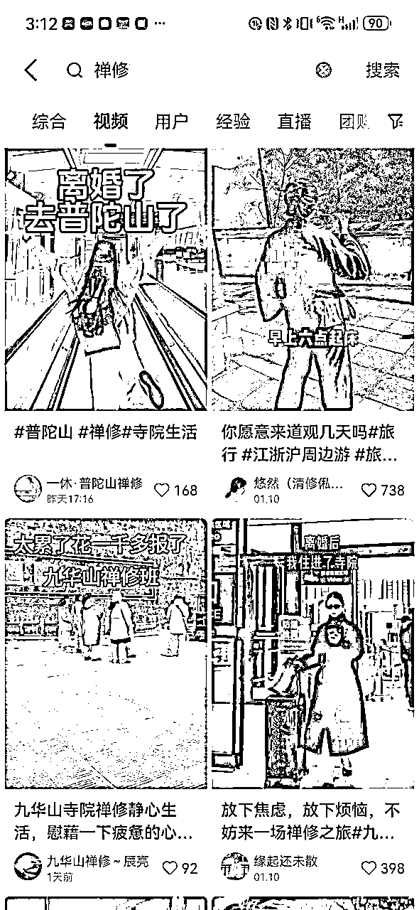
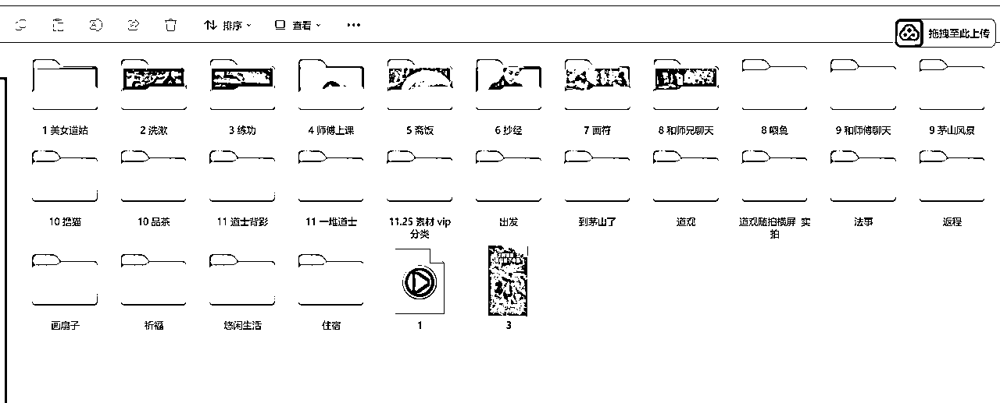
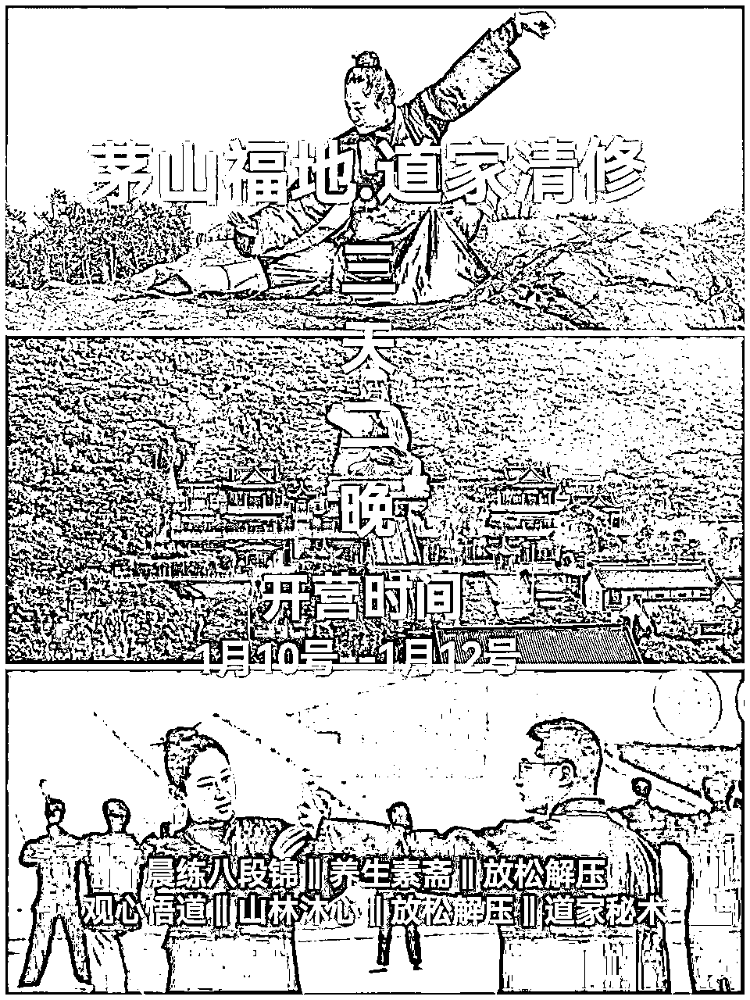
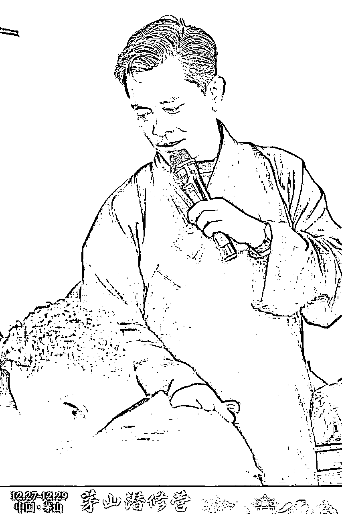
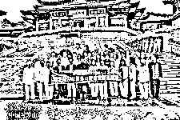
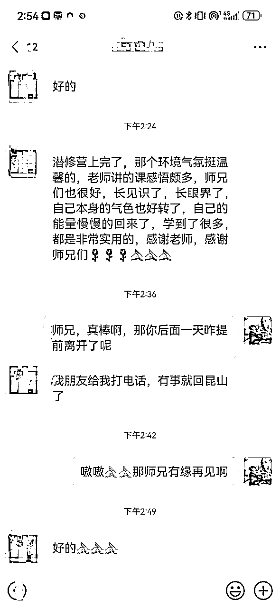
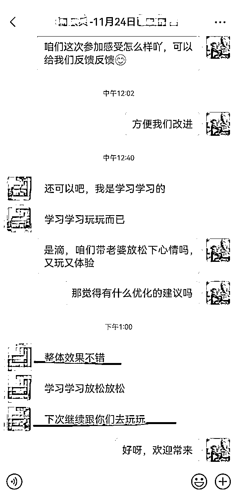
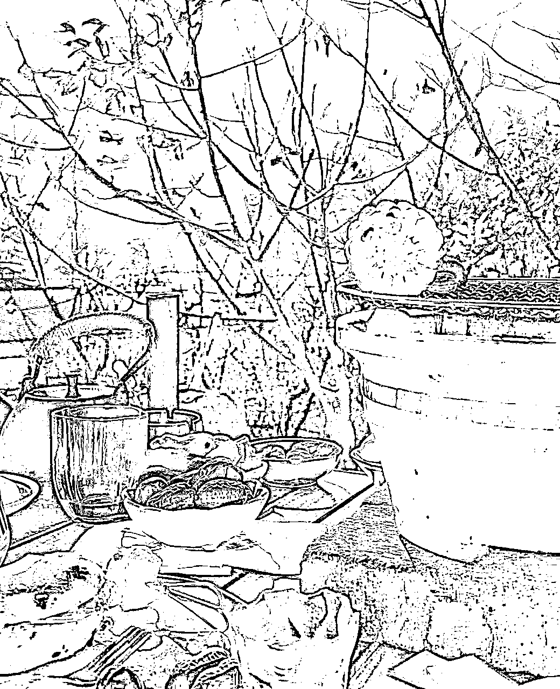

来源：https://xcnr0yiajwhz.feishu.cn/docx/XEfCdCNxwodHKnx2amAceMYYn1d
各位圈友们大家好！我是奶茶。
过去我曾在大厂做到了运营部门总监的位置，后来毅然决定踏上创业路，成立了自己的工作室。短短一个月我成功跑通了短视频矩阵获客，每天能实现 "50~100 + "的引流。搭配私域成交的高效模型，业务稳稳地步画入了变现轨道。如今正在进一步扩大布局。
我能取得这些成绩，在生财有术的学习功不可没。每次拜读圈友们分享的文章，都让我茅塞顿开收获满满。今天我也把自己亲手跑通变现闭环的寺庙禅修 / 道观清修项目，毫无保留地分享给大家，期待能给大家带来启发。
这个项目适合小工作室去做，投入少，产出可观。像旅游品项目一样，节假日是高峰期。目前过年期间流量较好，单账号GMV能做到日销6k-1w，我布局了几十个账号，目前打算过年不休息，持续接项目以及扩大项目。
项目的本质是依靠名山大川为IP,吸引用户购买寺庙禅修 / 道观清修的服务，属于文旅赛道。线上只需要打通流量变现端口即可。不需要真人出镜，也不需要自己做交付。属于低成本项目，但受天气、假期等因素制约，具有周期性，淡旺季特征突出。对于做过流量获客的伙伴，起盘难度较低，
目前旅修这个项目是我们一阶段转化的流量入口，后期我们还计划在私域卖文玩手串等产品，做多次转化。市面上做这种项目的小团队工作室还是蛮多的。我在生财第一次分享这个项目，并且是首发把信息同步给大家，如果有圈友感兴趣，我们可以一起占山头，攻克一个又一个名山大川，合作共赢。
不晚。最近有武汉的团队起了10个号，使用视频引流模板，每条内容播放量都在1万+，甚至达到10几万。在这个领域来说已经是小爆款的流量 了。对于新手需要一定学习时间。建议新手专注做流量或变现环节，能更快获得正反馈。
1.寺庙禅修/道观清修的发展过往
2.做禅修项目需要打通的关口
3.如何一步一通关，让禅修成为更多人的选择
4.禅修下一步的发展
禅修项目的发展早在 2023 年各平台已初现端倪，不少人应该都曾刷到过相关视频。但那时真正付诸行动，深入开展该项目业务的从业者屈指可数。
2024 年 1 月前后我开始接触项目，当时已经有做流量的团队开始经营，他们把对象锁定在九华山、等宗教圣地展开推广。那段时间是流量红利期，几乎每的视频都能成为爆款。仅单个账号一条短视频的引流，就能轻松收获 100 +的客户资源。
9 月份左右，越来越多专注于粉丝与流量的团队涌入。整个禅修项目市场开始有了内卷的苗头。
12 月至今，随着双 11大型促销活动结束，叠加年关降至，寺庙禅修与道观清修相关内容的流量开始回暖，市场逐步进入爆发式增长。我最近的成交量就在大幅上升。
项目交付都在线下，主打静心体验。对于佛教和道教方面，只要与相关协会渠道有充分沟通与洽谈，便可顺利推进。像我们耳熟能详的茅山、武当山、九华山等地，都允许在其寺庙或道观内开展经营活动。怎么找渠道洽谈见下文第三板块第5点。



由于项目与宗教信仰挂钩，时不时会面临平台账号封禁的情况。建议要多准备些账号。做流量的关键是找到近期对标爆款素材，拆解爆款素材的元素（封面、配音、文案等等），按照场景拆分，比如以下场景，每一个场景做素材切分和整理，最后进行排列组合即可。

首先要明确，禅修本身受制于客户时间，课程排期，距离等因素影响，转化周期较长，拉长周期来算转化，数据蛮可观的。
在转化上我们由于扮演的角色是佛教/道教信徒，所以营销策略上不能太激进，营销色彩不能太重，避免用户排斥，只做好回复和解答即可。
线下的体验活动：有练习养生功，吃素斋，打坐，学习八字风水等丰富的静心活动，这个是我们打磨了快1年的交付团队，能保证体验和口碑。



确定平台，经验下来，抖音的流量更适合去做禅修粉，其他的渠道变现效率没有抖音来的快。
确定素材，我们的素材，一部分是实拍的，现场本人去实拍，一部分是网上找的素材进行混剪创作。可以自己剪辑。也可以外包个剪辑去做这个事
确定账号数量，刚开始新手建议用三个手机起3个号，后面可以逐步增加账号数量。
测试模版：搜集爆款视频模版，进行拆解和创作，分发在3-10个手机账号上，就可以开始起号了。
评论区回复：每条有效的评论，我们都会一一回复，怎么判断有效，比如怎么来？我想去？愿意？这些话术都可以进行回复，不漏掉每个粉丝。
关注：对每个主动关注你的客户，有关必回，并配上一段导流的话术，吸引用户主动留客资。
私信：每个评论，关注我的好友，我都会进行一一的回复，越及时回复，客户反馈添加效果越好。
客户来的时候我们会进行一问一答来判断用户的意向：
高意向a类客户：马上转化，一般都会直接交定金去获得预约名额。
一般意向b类客户：可能说这段没时间，等年后，等放假之类的话，我们只需保持跟他正常的交流，不要强推销，这种客户如果想来的话，自然就都来了。
没意向c类客户：这种客户我们可以用朋友圈去养客户，售卖一些寺庙周边产品，例如手串，画符，也是可以带来一笔收入的。
客户一般反馈都还不错，我们的定价是有优惠活动，报名1次，后面3次免费赠送归营，这也为我们的禅修迭代打下基础。


像禅修体验有道观参观，老子33m铜像参观，打坐静心，练习养生功等，总共3天的时间，客单价1000多，用户每个环节从吃喝玩都不用操心，都有人给安排好了，来了只管体验和静心。

1.通过抖音短视频查找
抖音短视频有很多山头，比如九华山，普陀山，茅山，武当山，山头的ip，可以通过建联他们去寻找。
2.自己通过陌拜找到寺庙/道观对接人
自己去寺庙/道观打听，目前寺庙/道观其实也是接待的，不过第一次去容易找不到出路，可以先在公众号找到对接人，然后去拜访。
3.加入已经建联的组织
如果你想建联道观，但起盘前期不想管交付，可以加入成熟的组织，这样少操心直接起量赚钱。
对于已经能做矩阵获客+变现的，做禅修的放大思路
同类素材打法，可以复制别的山头，比如我们打茅山，还有武当山，九华山，普陀山可以打，方法复制即可
这套玩法适合小工作室去做从打粉到变现，我们也可以把这类方法交付给他们进行合作变现，这都是我们正在走的路，未来也希望我们这套玩法能多帮咱圈友起项目。
以上是我们整个链路的分享，感谢亦仁，七天等生财的团队们，生财这个平台真的很美好，传达真善美的路上，和你们一起同行。